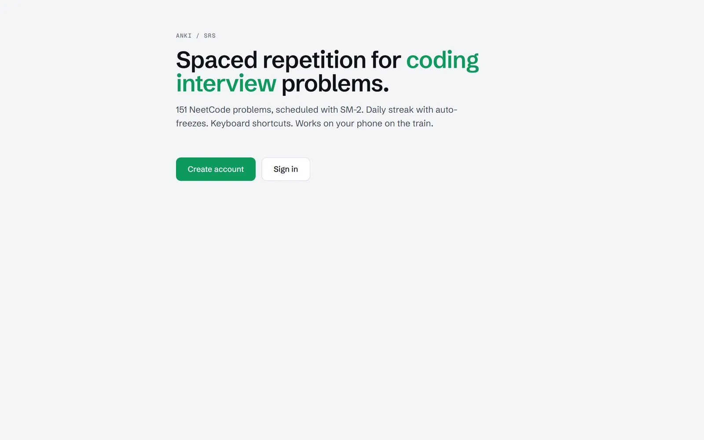

Learning · SM-2 · Web
anki-srs
Spaced repetition for coding-interview problems.

01 Problem
Grinding LeetCode the week before interviews doesn't stick. I wanted the Anki experience — SM-2 spaced repetition — but purpose-built for a curated problem set, so review effort lands on the problems I'm about to forget instead of the ones I already know cold.
02 Approach
151 NeetCode problems are scheduled with the SM-2 algorithm. Each review grades recall and reschedules the problem automatically; daily streaks have auto-freezes so one missed day doesn't wipe out momentum. Keyboard shortcuts keep review fast, and the layout is tuned for one-handed phone use on a commute.
Accounts run on Auth.js so progress syncs across devices — start a session on the laptop, finish it on the train.
Representative — the live review screen is behind sign-in
Longest Substring Without Repeating Characters
03 Tech stack
Frontend
Backend
Infrastructure
04 Outcome
151 problems sit behind a daily review loop with streaks and cross-device sync — it's the tool I actually use to stay sharp between interview cycles, rather than a dashboard I built and abandoned.